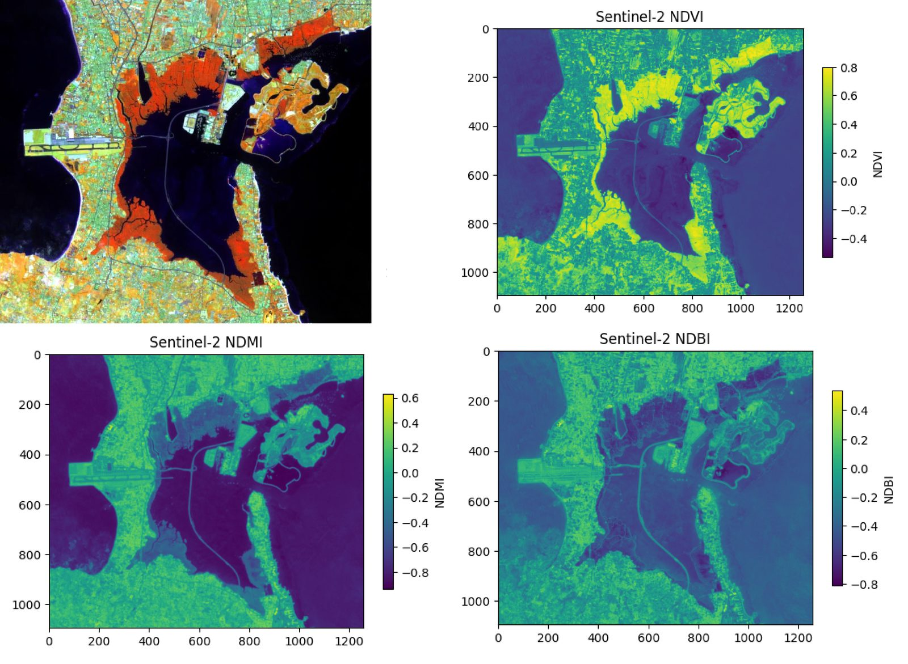
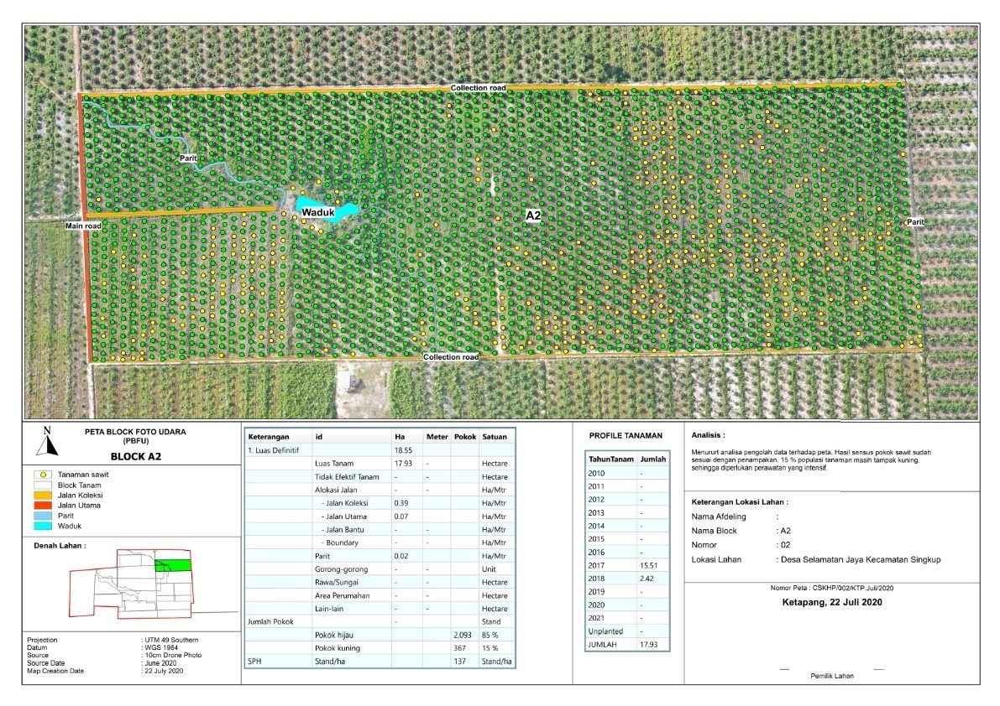
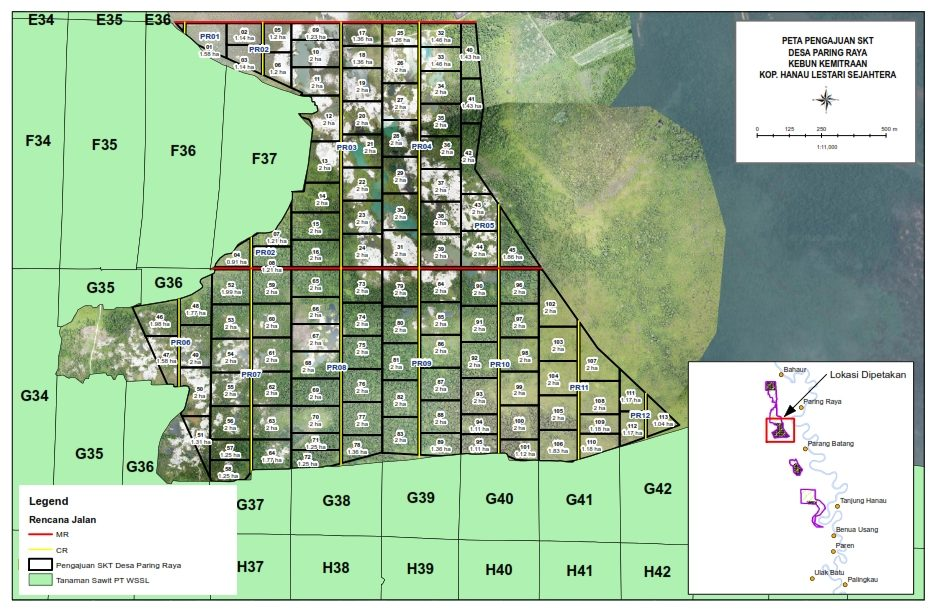
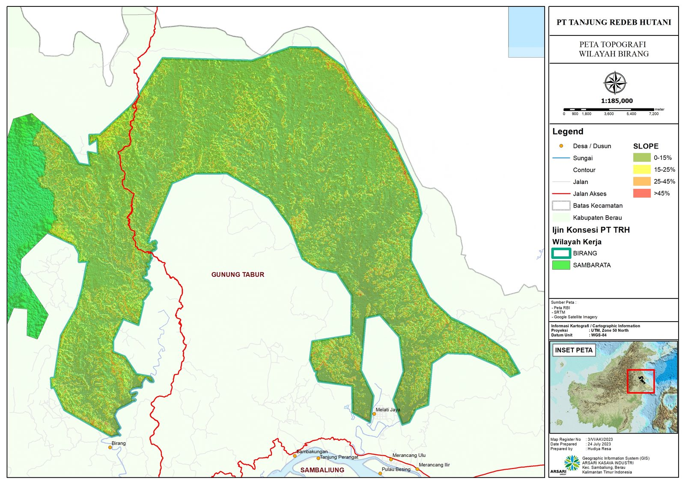
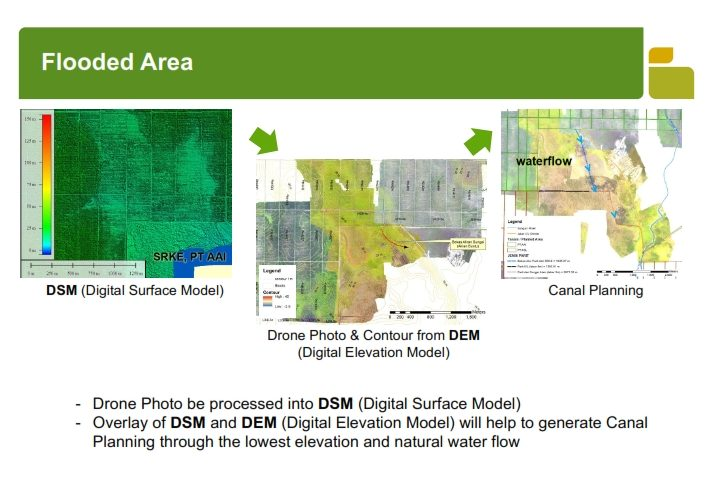
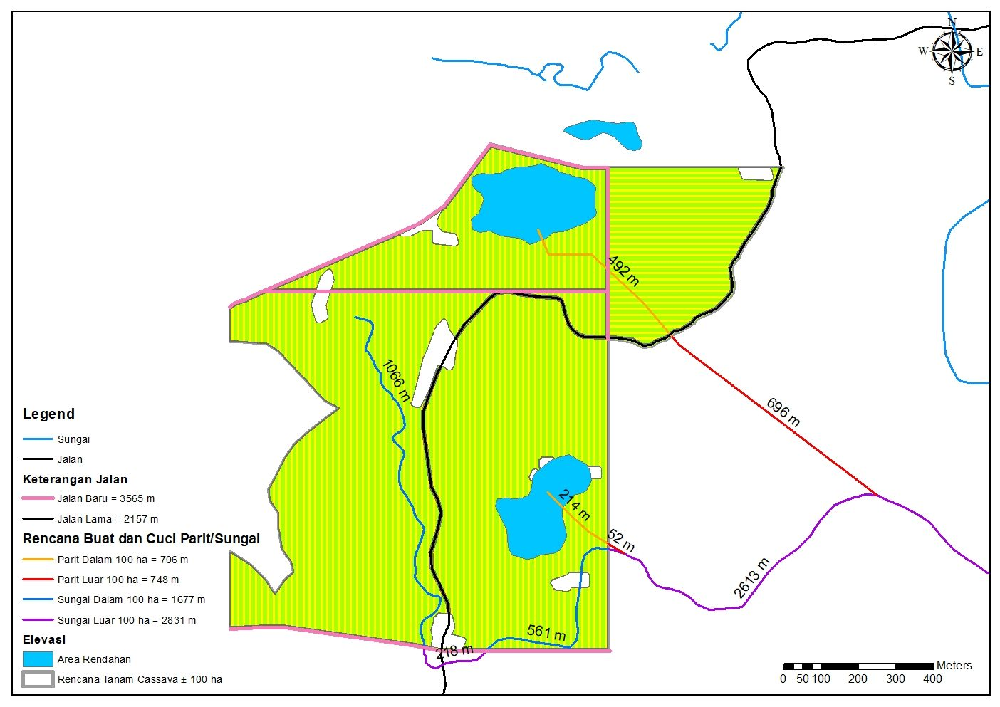
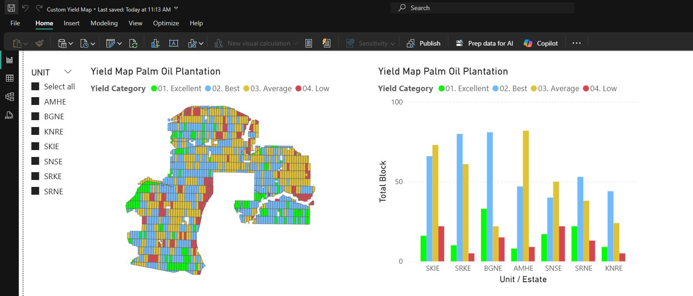
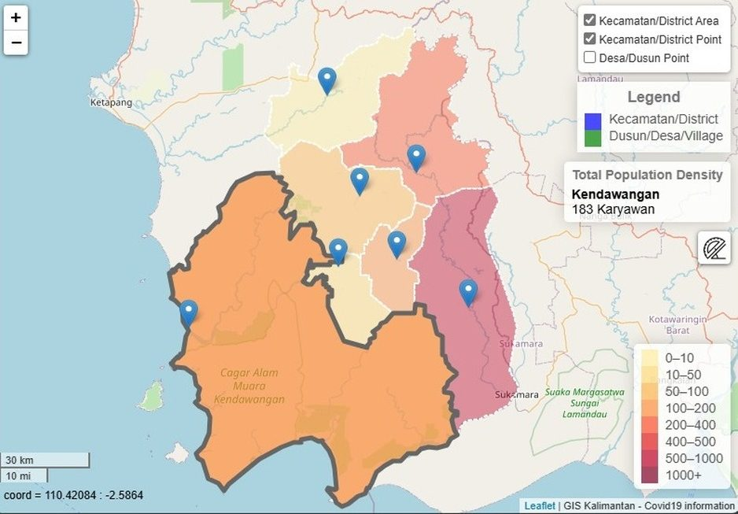

Land cover and change analysis
Land cover and land use classification from Sentinel-2 or Landsat, change between years, and change matrices in hectares.
GIS and Remote Sensing Analyst, Indonesia
I spent 10 years as a GIS analyst for oil palm and forestry companies in Kalimantan, and I hold a forestry degree from Gadjah Mada University. I turn Sentinel-2, Landsat and drone imagery into maps, area tables and change reports that field teams and auditors can use.

Land cover and land use classification from Sentinel-2 or Landsat, change between years, and change matrices in hectares.
NDVI, NDMI and other indices in Google Earth Engine, including time series for crops, forests and mangroves.
Orthophotos and surface models from drone photos, palm counts, block design and planted-area statements.
Print-ready maps in QGIS or ArcGIS, and fixes for KML/KMZ, shapefile and GeoJSON files.
Click an image to open it at full size.
Used NDVI, NDMI and NDBI from Sentinel-2 to separate mangroves from water, bare land and built-up areas, then classified land cover to map where mangroves grow.

Orthophoto map of an oil palm block with land cover, hectare statement, palm count and infrastructure, laid out for print.

Land cover classification and block design for a proposed plasma plantation. Block names follow the nearby core estate, roads are set aside, and planting zones are split into 2 ha units for farmers' land certificate applications.

Slope map in percent from DEM data for a concession area in East Kalimantan, with administrative boundaries, rivers and roads, made to plan field surveys.

Built a surface model from drone photos and overlaid it on the DEM to find natural flow paths and low points, so new canals follow the drainage.

Picked gentle-slope areas in former unproductive industrial plantation forest, then laid out blocks and planting rows for mechanized cassava planting.

Custom block map that colours each block from Excellent to Low yield, with a chart comparing estates. Part of a set covering bunch count, bunch weight, harvesting and fertilizer rounds, and year of planting.

Interactive map of cases by village and district in Ketapang, West Kalimantan, with employee data for management. Open the live map.
2023 to 2024, East Kalimantan
Planned 8,000 ha of planting blocks for Ministry of Forestry review and supported orthophoto mapping of 80,000 ha.
2022 to 2023, Central Kalimantan
Checked land plans against forest area, peat and moratorium maps for 15 companies, and made maps for land permits.
2014 to 2022, West Kalimantan
RSPO land use change analysis for 2006 to 2019, a 45,000 ha planted-area database from WorldView and drone imagery, drone surveys over 60,000 ha, and maps for HCV and High Carbon Stock audits.
Send me the boundary (KML, shapefile or coordinates) and what you want to know. I'll reply with what the imagery can show and how long it takes.